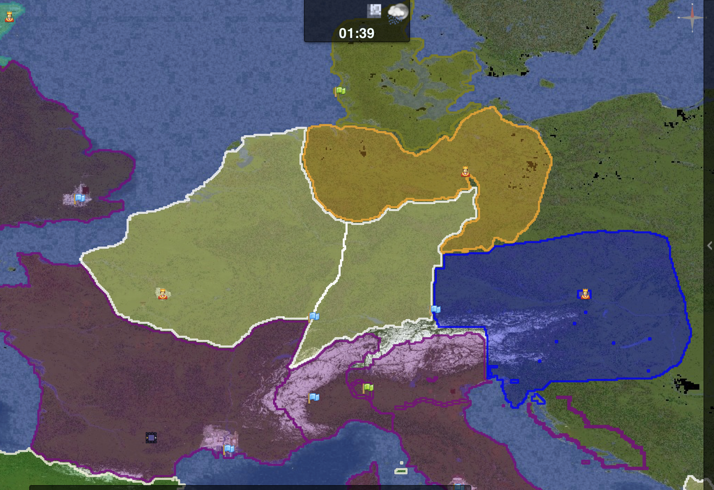

Dynmap is a plugin that displays a dynamic map of the server. This displays a 2d map of the overworld, warps, players, wars/sieges, towns, and nations.
The dynmap is currently down
Map Legend:
Players can choose whether they wish to be shown on the dynmap. To hide yourself from the map, do /dynmap hide. To reveal yourself again, do /dynmap show.
